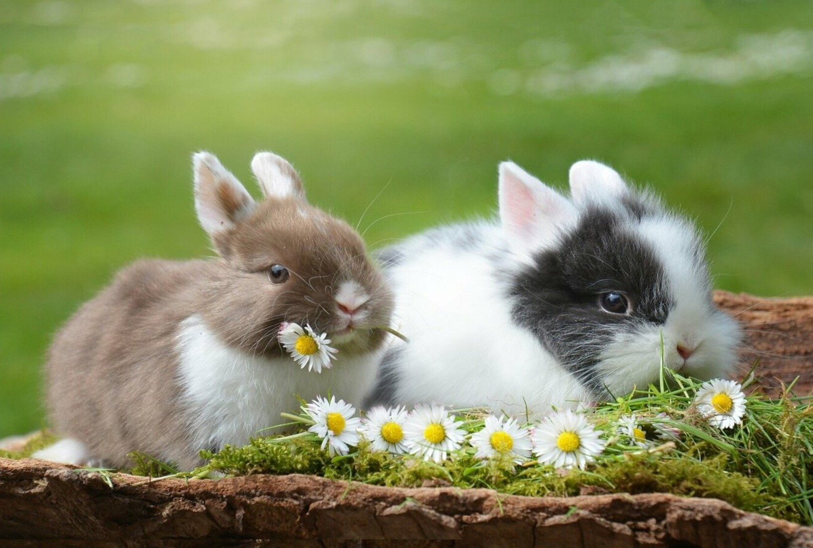
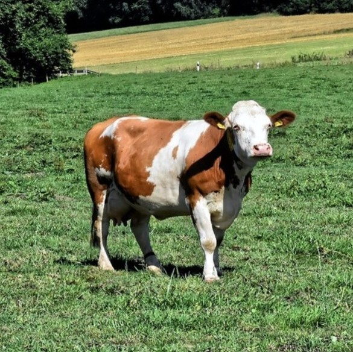
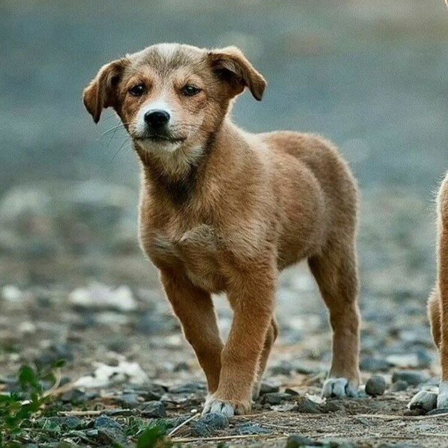

토끼
당신은 정열적이고 충실하며 목가적이고 낭만적이며 내적 신념이 깊은 사람이군요
마음이 따뜻하고 조용하며 자신이 관계하는 일이나 사람에 대하여 책임감이 강하고 성실하네요.
이해심이 많고 관대하며 자신이 지향하는 이상에 대하여 신념을 가지고 있습니다.
완벽주의적 경향이 있고 자신이 하는 일에 의미를 찾고자하는 경향이 있습니다.
하지만 자신의 이상과 현실이 안고 있는 실제 상황을 고려하는 능력이 필요하다.
당신의 유형은 흔치않은 유형으로, 전 세계 인구의 대략 4%가 이 유형에 속해있다고 합니다.



WORST 궁합 메니멀
BEST 궁합 메니멀